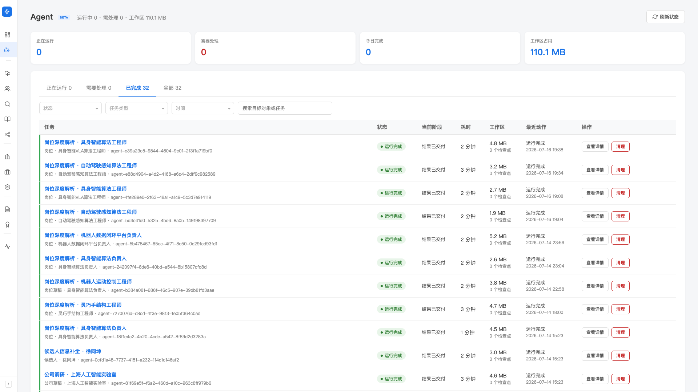
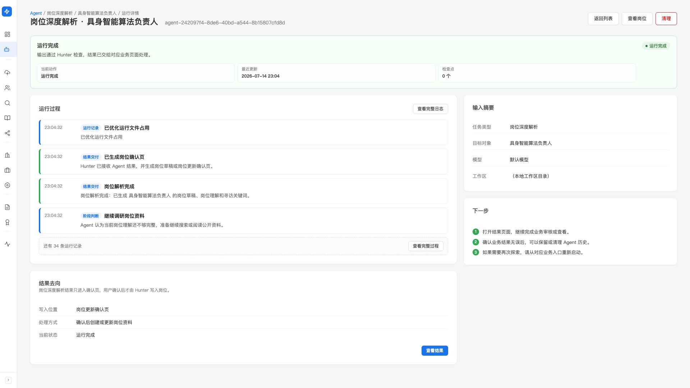

Agent 运行中心
Hunter 里有好几处能力会派出「AI 助手」在后台替你干活——岗位深度解析、学术搜索、公司调研、候选人档案补全等。 这个页面把它们的后台运行统一汇总到一起：谁在跑、跑到哪一步、耗时多久、有没有需要你处理的， 都能一眼看到，也能点进某一次运行看它一路做了什么、失败在哪。
产品里对应左侧导航的「Agent」（Beta）。它是一个跨能力的运行总览， 本身不产生新业务结果——具体结果仍会回到各自的确认页 / 审核页（岗位确认、公司确认、学术搜索结果、信息补全审核等）。
这些运行都是从各自的功能页发起的（比如在岗位里做深度解析、在学术里发起搜索）。 Agent 运行中心是它们的「后台总控台」——平时不用管， 只有想知道进度、或有任务提示需要处理时，才来这里看一眼。
这里汇总了哪些运行
目前接入的任务类型有四种，你在列表的「任务类型」筛选里也能看到这几项：
- 候选人信息补全：给某位候选人补全公开档案信息，结果进入信息补全审核页
- 岗位深度解析：解析岗位 JD、生成岗位理解和寻访关键词，结果进入岗位确认页
- 学术搜索：自动生成搜索条件、多源召回、去重分级，结果进入学术搜索结果页
- 公司调研：调研一家公司并生成公司草稿，结果进入公司确认页
不管是哪一种，后台 AI 都不会直接写进你的数据库——它只负责跑和产出草稿， 最终入库始终经过 Hunter 的结构检查、再由你在对应确认页 / 审核页拍板。这一点和自动寻访的「先进待审池」是同一套逻辑。
列表页：一眼看清谁在跑
从左侧导航进入「Agent」。页面从上到下：
- 4 个关键指标：正在运行 · 需要处理 · 今日完成 · 工作区占用
- 4 个标签页：正在运行 / 需要处理 / 已完成 / 全部——每个标签后面带数量
- 筛选与搜索：按状态、任务类型、时间范围筛选，或直接搜目标对象 / 任务名
- 运行表格：每行一次运行，列出 任务（任务名 + 目标对象）· 状态 · 当前阶段 · 耗时 · 工作区（占用大小 + 检查点数量）· 最近动作 · 操作

正常跑完的运行会自己走完、把结果送到对应页面，不用你操心。 真正需要你介入的，都会归到 「需要处理」 标签下（已暂停 / 已停止 / 已中断 / 运行失败）。 平时扫一眼这个标签的数字就够了。
每条运行的状态含义
状态徽章一共这几种，理解它就知道这次运行现在是什么处境：
- 排队中：已提交，在等空闲资源（后台会限制同时运行的数量）
- 运行中：正在执行任务
- 检查未通过：产出没通过 Hunter 的结构检查，系统正要求它自行修正后重跑
- 已暂停：运行被挂起，等你处理
- 正在停止：你点了停止，正在收尾
- 已停止：你手动停下的
- 已中断：运行被意外打断（如程序重启），可继续或清理
- 运行失败：出错结束，需要你看原因
- 运行完成：产出通过检查，结果已交给对应业务页面
- 已清理：工作区已清空，只保留一条轻量运行记录
表格右侧的操作按钮会随状态变化：运行 / 排队中时可以「停止」（排队中显示「取消」）； 暂停 / 停止 / 中断 / 失败时可以「继续」或「清理」；完成后可以「查看结果」或「清理」。
点进一次运行：看它做了什么
点任意一行的任务名，进入这次运行的详情页。页面结构：
-
顶部状态条
当前状态 + 一句话说明它现在的处境，外加当前动作、最近更新时间和检查点数量。 如果还在跑，这块会自动刷新，不用手动点。
-
运行过程（事件时间线）
这是详情页的核心——把这次运行一步步做了什么用人话列出来：读了哪些网页、搜了什么资料、 更新了哪些计划、生成了什么结果。默认显示最近几条，点「查看完整过程」看全部。 每条事件都带一个类别标签（如读取网页、搜索、解析计划、结果交付、访问失败等），一眼分清是正常动作还是异常。
-
点开某条事件看明细
点任意一条事件，弹窗里会展开这一步的详细说明（做了什么、发现了什么、对结果有什么影响）。 想看更底层的原始信息，可以再点「技术详情」复制出来（排障或反馈问题时很有用）。
-
右侧「输入摘要」和「下一步」
输入摘要告诉你这次运行是基于什么发起的（任务类型、目标对象等）； 「下一步」用几句话提示你现在该做什么（继续观察 / 去确认页 / 处理失败等）。
-
「结果去向」卡片
明确告诉你这次运行的结果会写到哪里、怎么处理、当前状态。 运行完成后，这里的按钮就能直接跳到对应的确认页 / 审核页 / 结果页。

运行失败 / 异常怎么排查
发现某条运行卡在「需要处理」里（失败 / 停止 / 中断 / 暂停），按这个顺序看：
-
先看顶部状态条那句说明
大多数时候它已经把原因说清楚了（比如输出没通过检查、被中断等）。
-
再翻「运行过程」找红色 / 异常事件
访问失败、调用失败、生成结果失败这类事件会单独标出来，点开就能看到具体是哪一步、什么原因—— 常见的是网页读取失败、搜索源临时不可用、或产出结构没对上。
-
确认影响范围
单个网页 / 单次搜索失败通常不影响整体——AI 会自动换别的公开来源继续。 只有整体状态变成「运行失败」才需要你出手。
-
处理后「继续运行」或「清理」
排除掉网络、输入等外部问题后，点「继续运行」重跑； 确认这次运行没用了，就点「清理」把工作区释放掉。
看到状态是「检查未通过」不用紧张——这是产出没对上 Hunter 要求的结构， 系统会自动要求它修正后重跑，通常几轮内就能自己走通。 只有多次修正仍失败，才会落到「需要处理」里等你看。
工作区与清理
每次运行都会占一点工作区空间（列表和指标里能看到占用大小）。为了不让它无限堆积， Hunter 会自动清理较早的、已结束的运行——清理后那条记录会变成「已清理」， 运行记录仍在、只是工作区被释放，不影响已经交付到业务页面的结果。
你也可以对已完成 / 已停止 / 失败的运行手动点「清理」，立刻腾出空间。正在跑的运行不会被清理。
清理释放的是这次运行的中间过程文件。 已经进了岗位 / 公司 / 学术 / 候选人对应页面的结果，一律保留，可以放心清理旧运行。